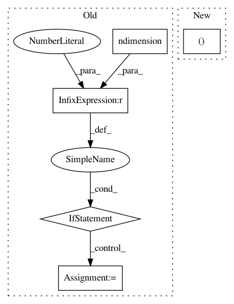

7570ee1d758c93dd4054009fc12be6cc31b54031,gpytorch/lazy/interpolated_lazy_tensor.py,InterpolatedLazyTensor,_get_indices,#InterpolatedLazyTensor#Any#Any#,261
Before Change
interp_values = torch.matmul(left_interp_values, right_interp_values)
// Batch compute values that will be non-zero for row k
if left_interp_indices.ndimension() == 3:
left_interp_indices = left_interp_indices.unsqueeze(-1).expand(n_data, n_interp, n_interp).contiguous()
right_interp_indices = right_interp_indices.unsqueeze(-2).expand(n_data, n_interp, n_interp).contiguous()
else:
left_interp_indices = left_interp_indices.unsqueeze(-1).expand(n_data, n_interp, n_interp).contiguous()
right_interp_indices = right_interp_indices.unsqueeze(-2).expand(n_data, n_interp, n_interp).contiguous()
base_var_vals = self.base_lazy_tensor._get_indices(left_interp_indices.view(-1), right_interp_indices.view(-1))
base_var_vals = base_var_vals.view(left_interp_indices.size())
res = (interp_values * base_var_vals).sum(-1).sum(-1)
return res
After Change
def _get_indices(self, left_indices, right_indices, *batch_indices):
left_interp_indices = self.left_interp_indices.__getitem__((*batch_indices, left_indices))
left_interp_values = self.left_interp_values.__getitem__((*batch_indices, left_indices))
right_interp_indices = self.right_interp_indices.__getitem__((*batch_indices, right_indices))
right_interp_values = self.right_interp_values.__getitem__((*batch_indices, right_indices))
In pattern: SUPERPATTERN
Frequency: 3
Non-data size: 5
Instances
Project Name: cornellius-gp/gpytorch
Commit Name: 7570ee1d758c93dd4054009fc12be6cc31b54031
Time: 2018-11-25
Author: gpleiss@gmail.com
File Name: gpytorch/lazy/interpolated_lazy_tensor.py
Class Name: InterpolatedLazyTensor
Method Name: _get_indices
Project Name: cornellius-gp/gpytorch
Commit Name: c517e0b8b34a85b8142b4669c152b6e62c02d8e2
Time: 2019-03-18
Author: gpleiss@gmail.com
File Name: gpytorch/lazy/lazy_tensor.py
Class Name: LazyTensor
Method Name: diag
Project Name: cornellius-gp/gpytorch
Commit Name: 4c6458b841bb49610b5cf6b9fbab94df5cad85ee
Time: 2019-01-23
Author: gpleiss@gmail.com
File Name: gpytorch/lazy/toeplitz_lazy_tensor.py
Class Name: ToeplitzLazyTensor
Method Name: _quad_form_derivative